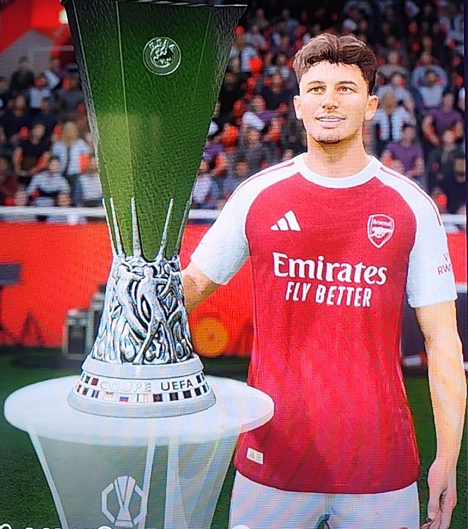
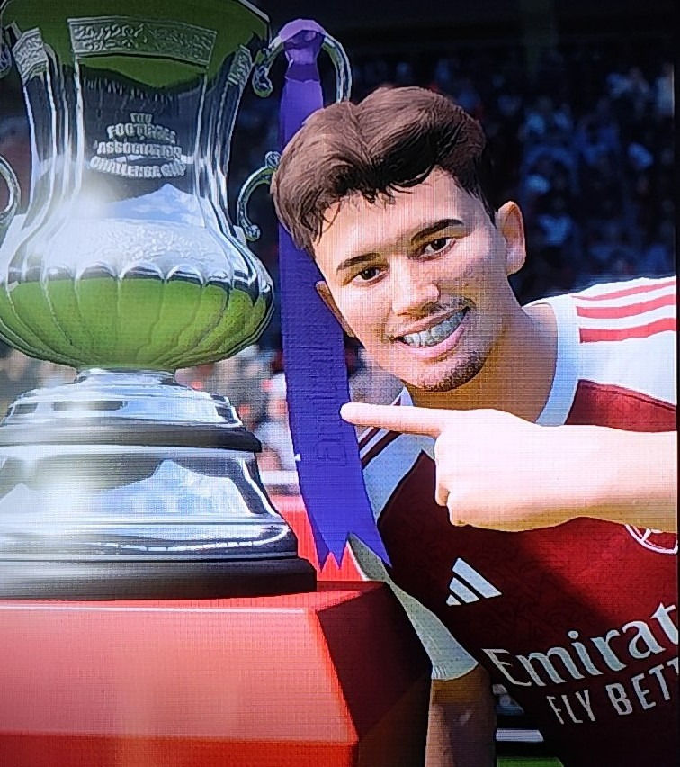

História do Treinador
Reconhecido como um dos melhores técnicos do mundo e de sua geração, Maycon Santos assumiu o comando do Arsenal após uma passagem lendária pelo Brentford. No clube anterior, onde permaneceu por 5 anos e 6 meses, Maycon construiu um legado incrível, conquistando títulos antes impossíveis e jamais imagináveis, saindo de lá com um currículo invejável e o status de verdadeira lenda.
A chegada ao Arsenal trouxe um desafio enorme: recolocar os Gunners no mapa do futebol elite, de onde nunca deveriam ter saído. Quando Maycon aceitou o cargo, a situação era caótica — o time amargava a **15ª colocação na Premier League**, já havia sido eliminado da Carabao Cup e restavam apenas as disputas da FA Cup e da UEFA Europa League. Para efeito de comparação, antes de sua saída, Maycon havia deixado o Brentford isolado na 1ª colocação, com uma excelente vantagem de pontos.
O desafio de transformar um elenco totalmente desacreditado transformou-se em mais uma página de história. Sob o comando estratégico do brasileiro, o Arsenal arrancou na tabela da Premier League de forma avassaladora, terminando a competição em um histórico **2º lugar**, ficando a apenas 11 pontos de diferença do campeão Brentford. Para coroar o ano de reviravolta, Maycon faturou os títulos da **FA Cup** e da **UEFA Europa League**.
Apesar das conquistas expressivas, os bastidores ferveram. Fiel ao seu estilo de gestão enérgica, Maycon chegou reformulando o elenco, dispensando medalhões e estrelas consagradas para abrir espaço a jogadores jovens e rejuvenescer a equipe. Essa postura radical gerou atrito imediato com a diretoria e com parte da torcida, que não curtiu as saídas das referências do time. Mesmo campeão, o treinador terminou a temporada na corda bamba.
Em uma demonstração de força, a diretoria cedeu ao talento do comandante e deu o aval definitivo, renovando seu contrato para a **temporada 31/32**. Dono do projeto, Maycon impês exigências rígidas: autonomia total para comandar o departamento de futebol, carta branca para afastar estrelas veteranas devido à idade e foco absoluto na contratação de novas promessas mundiais. Com a promessa e a garantia de novos títulos para as próximas temporadas, a nova era de Maycon Santos no Arsenal começa oficialmente.
💰 Finanças
Resumo Financeiro: Arsenal
| Categoria | Valor |
|---|---|
| Receitas | + $ 672,72 MI |
| Despesas | - $ 505,89 MI |
| Lucro Total | + $ 166,83 MI |
📈 Indicadores de Performance:
- Valor do Clube: $ 1,35 bi
- Projeção Final: $ 1,55 bi
🏆 Títulos da Temporada
🏆 UEFA Europa League
Temporada 30/31
🏆 FA Cup (Copa da Inglaterra)
Temporada 30/31
📸 Galeria de Títulos
UEFA Europa League
Temporada 30/31

FA Cup
Temporada 30/31

Melhor Treinador do Mundo
Maycon Santos - Temporada 30/31

📊 Tática do Time (30/31)
Predefinição: Personalizado
Esquema: 4-2-1-3
Estilo de armação: Passe Curto
Abordagem defensiva: Equilibrado
📋 Elenco Titular
🧤 Goleiro: Gonzalo Planas
🛡️ Defensores: Wesley (LD), William Saliba (ZAG), Dean Huijsen (ZAG), Juanma Pastor (LE)
⚙️ Meio-Campistas: Declan Rice (VOL), Martin Zubimendi (VOL), Konstantinos Karetsas (MEI)
⚽ Atacantes: Bukayo Saka (PD), Rodrygo (PE), Viktor Gyökeres (ATA)
📋 Elenco Reserva
🧤 Goleiro: Juliano Guimarães
🛡️ Defensores: Nicolo Savona (LD), Evaristo Pastor (LD/LE), Cristhian Mosquera (ZAG), Lucas Beraldo (ZAG)
⚙️ Meio-Campistas: Francisco Márquez (VOL), Mikel Merino (VOL), Martin Ødegaard (MEI)
⚽ Atacantes: Noni Madueke (PD), Eberechi Eze (PE), Vitor Hugo Araújo (ATA)
💼 Central do Elenco (30/31)
🧤 Goleiros
| Gonzalo Planas | 20 anos | Espanha 🇪🇸 |
| Juliano Guimarães | 18 anos | Brasil 🇧🇷 |
🛡️ Laterais Esquerdos
| Juanma Pastor | 21 anos | Argentina 🇦🇷 |
🛡️ Zagueiros
| William Saliba | 30 anos | França 🇫🇷 |
| Dean Huijsen | 26 anos | Espanha 🇪🇸 |
| Cristhian Mosquera | 26 anos | Espanha 🇪🇸 |
| Lucas Beraldo | 27 anos | Brasil 🇧🇷 |
🛡️ Laterais Direitos
| Wesley | 27 anos | Brasil 🇧🇷 |
| Nicolo Savona | 28 anos | Itália 🇮🇹 |
| Evaristo Pastor | 17 anos | Argentina 🇦🇷 |
⚙️ Volantes
| Declan Rice | 32 anos | Inglaterra 🏴 |
| Martin Zubimendi | 32 anos | Espanha 🇪🇸 |
| Francisco Márquez | 18 anos | Espanha 🇪🇸 |
| Mikel Merino | 34 anos | Espanha 🇪🇸 |
⚙️ Meias
| Konstantinos Karetsas | 23 anos | Grécia 🇬🇷 |
| Martin Ødegaard | 32 anos | Noruega 🇳🇴 |
⚽ Pontas Esquerdas
| Rodrygo | 30 anos | Brasil 🇧🇷 |
| Eberechi Eze | 32 anos | Inglaterra 🏴 |
⚽ Pontas Direitas
| Bukayo Saka | 29 anos | Inglaterra 🏴 |
| Noni Madueke | 29 anos | Inglaterra 🏴 |
⚽ Atacantes
| Viktor Gyökeres | 32 anos | Suécia 🇸🇪 |
| Vitor Hugo Araújo | 17 anos | Brasil 🇧🇷 |
🎯 Objetivos da Temporada
PREMIER LEAGUE
- Objetivo: Classificar para UEFA Champions League
- Prioridade: Muito Alta
- Resultado Final: Vice-Campeão (2º Colocado) 🥈
EMIRATES FA CUP
- Objetivo: Vencer a Competição
- Prioridade: Muito Alta
- Resultado Final: Campeão 🏆
UEFA EUROPA LEAGUE
- Objetivo: Vencer a Competição
- Prioridade: Muito Alta
- Resultado Final: Campeão 🏆
🎯 Status da Carreira
ESTABILIDADE NO CARGO:
RENOVAÇÃO GARANTIDA (SOB ANÁLISE)
Nota da Diretoria: Contratado em janeiro de 2031 para um mandato emergencial de 6 meses. Apesar do atrito pela reformulação radical do plantel, o cumprimento das metas com os títulos da Europa League e FA Cup assegurou o respaldo para a temporada 31/32.